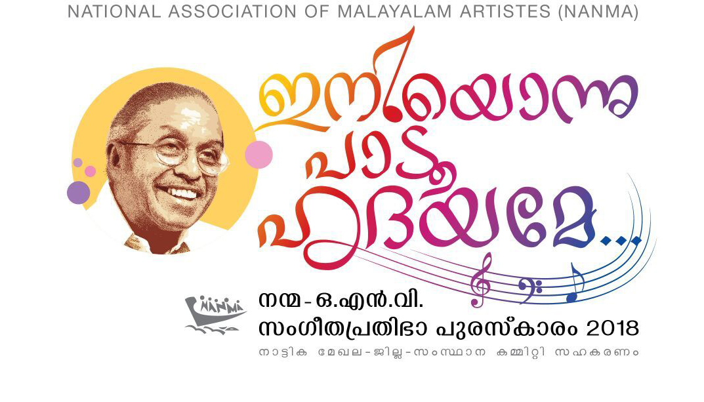

തൃശൂർ ജില്ലയിലെ ഏറ്റവും വലിയ മേഖലയായ നമ്മുടെ നാട്ടിക മേഖല (കയായമംഗലം, വലപ്പാട്,താന്ന്യം, അന്തിക്കാട്, തളിക്കുളം, വാടാനപളളി,ഏങ്ങണ്ടിയൂർ യൂണിറ്റുകൾ ) ജില്ലാ-സംസ്ഥാന കമ്മിറ്റിയുടെ സഹകരണത്തോടെ ഒ.എൻ.വി സാറിനു ആദരപുഷ്പങ്ങൾ ആർപ്പിക്കുകയാണ്, കവിയുടെ പേരിൽ ഏർപ്പെടുത്തിയ സംഗീതപ്രതിഭപുരസ്കാരത്തിലൂടെ...
നന്മ ഒഎൻ.വി സംഗീതപ്രതിഭ പുരാകാരം 2018, ശ്രീ കാനായി കുഞ്ഞിരാമന്റെ അരുമ ശിഷ്യനും ദേശിയ ചിത്രകാരനും ആയ ശ്രീ. ദാമോദരൻ നമ്പിടി രൂപകല്പനചെയ്ത ശിൽപം ,25000 രൂപ, പ്രശസ്തി പത്രം എന്നിവ അടങ്ങുന്നതാണ്.
15 വയസ്സ് മുതൽ 35 വയസ്സ് വരെ ഉള്ളവരിൽ നിന്നു 250 രൂപ രജിസ്ട്രേഷൻ ഫിയോടെയും നിബന്ധനകളോടെയും മത്സരാര്ഥികളായ ഗായകരെ ക്ഷണിക്കുന്നു. മത്സരാർത്ഥികൾ 4 റൗണ്ടായി ഒ.എൻ. വി യുടെ സിനിമ-നാടക ഗാനങ്ങൾ ആലപിക്കണം.
'ഇനിയൊന്നു പാടൂ ഹൃദയമേ...' ഈ പരിപാടി ഒന്നാം റൌണ്ട് ചേറ്റുവായിലും രണ്ടാം റൌണ്ട് കയ്പമംഗലത്തും മൂന്നും നാലും റൗണ്ടുകൾ തൃപ്രയാർ ട്.എസ്.ജി.എ ഇന്ഡൊർ സ്റ്റേഡിയത്തിലും നടത്തുന്നു. ഒന്നാം റൗണ്ട് 2018 ഏപ്രിൽ രണ്ടാം തിയതി തിങ്കളാഴ്ചയും രണ്ടാം റൗണ്ട് ഏപ്രിൽ 10 ചൊവ്വാഴ്ചയും നടത്തുന്നതായിരിക്കും. മൂന്നും നാലും റൗണ്ടുകൾ മെയ് 5 ശനിയാഴ്ച ആയിരിക്കും നടത്തുന്നത്. ഗ്രാന്റ് ഫിനാലെ പ്രത്യേകം സജ്ജമാക്കിയ വേദികളിൽ പാസ്സ് മൂലം നിയാത്രിക്കുന്ന സദസ്സിനും കവിത, ഗാന, സിനിമ, രാഷ്ട്രീയ, സാംസ്കാരിക, വ്യവസായ രംഗത്തെ പ്രമുഖരായ അതിഥികൾക്കും ജനപ്രതിനിധികൾക്കും മുമ്പിൽ സംഘാടകസമിതി ഒരുക്കുന്ന ഓർക്കസ്ട്രയോടൊപ്പം ആലപാനമത്സരം നടത്തിയാണ് പ്രതിഭയെ കണ്ടെത്തുന്നത്.
സിനിമാസംവിധായകർ, നടിനടന്മാർ, ഗാനരചയിതാക്കൾ, സംഗീതസംവിധായകർ, കവികൾ, രാഷ്ട്രീയ-സാമൂഹിക-സാംസ്കാരിക രംഗത്തെ പ്രമുഖർ , വ്യവസായ പ്രമുഖർ, ജനപ്രതിനിധികൾ തുടങ്ങിയവർ നിറസാനിധ്യമാകുന്ന സദസ്സിൽ 2018 മേയ് 5 ശനിയാഴ്ച പുരസ്കാരസമർപ്പണസമ്മേളനവും - ഒ.എൻ.വി അനുസ്മരണ സമ്മേളനവും നടക്കും. 2018 മേയ് 5 ലെ ഫിനാലെയിലേക്കും കലാകാരന്മാരുടെ ചികിത്സ സഹായനിധി രൂപീകരിക്കുന്ന ചടങ്ങിലേക്കും എല്ലാ ഗായികാഗായകന്മാരെയും സ്നേഹപൂർവം ക്ഷണിക്കുന്നു.